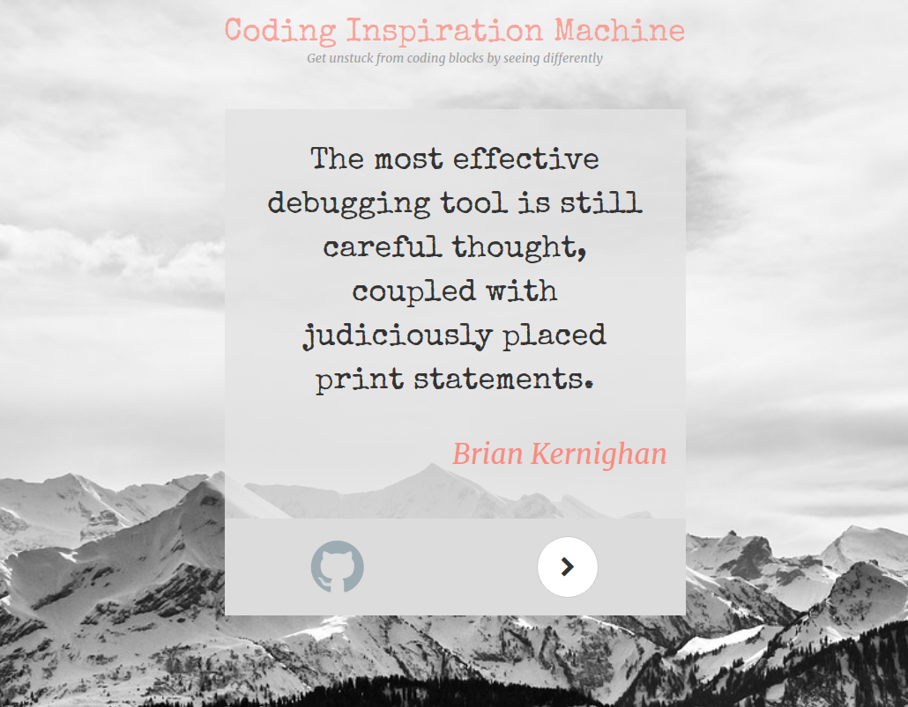

I love coding because it really excites me, it is fun to do. It really excites me whenever I come across a problem, I get curious about solving it. I am a person who loves to solve puzzles, questions involving logic and thinking ability. Some reasons why I, and I think any other person, loves coding are because- It helps me automate some of my daily and simple tasks. If I have to do something repeatedly, I will prefer to code it and then run that code again and again. It is really interesting and fun activity to do. Imagine creating a solution to a problem that can be used by people to make their work easy. I am person who loves puzzles and problems involving logic. I can be seen playing Arcade or Puzzle category games in my free time. You can create something that can be extremely useful to people that can make their life and work easier. I love that feeling you get when your solution gets an AC in some contest. I extremely love programming and I do mean extremely but I don’t know why I am not able to express what I have for programming here.
We get stuck on a particular way of seeing the problem and it can be difficult to achieve a new perspective. I recently came across a tool from the creative arts and realised it could be adapted to work for programming. The tool that inspired me is Oblique Strategy Cards. They are prompts to break a cycle of thinking and inspire us to think differently. Cards include ‘Remove specifics and convert to ambiguities’ and ‘Use an old idea’.
